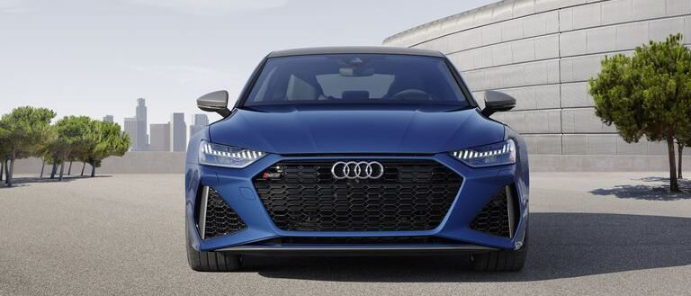

Дизайн RS
Вдохновленный гоночным наследием Audi Sport, Audi RS 7
performance отличается такими элементами дизайна, как мощные
широкие крылья и увеличенные передние воздухозаборники, которые
подают холодный воздух в интеркулер. Новинка 2024 года - RS 7
performance с матово-серой отделкой окон, зеркал и нижних
аэродинамических элементов.